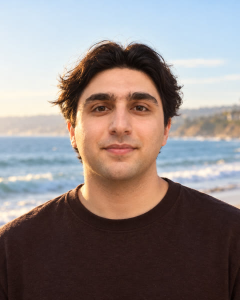
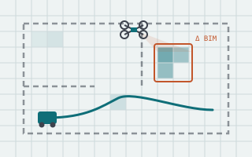
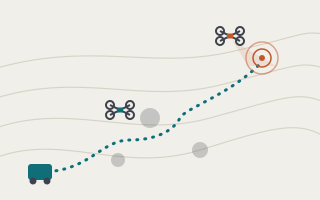
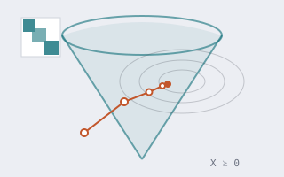
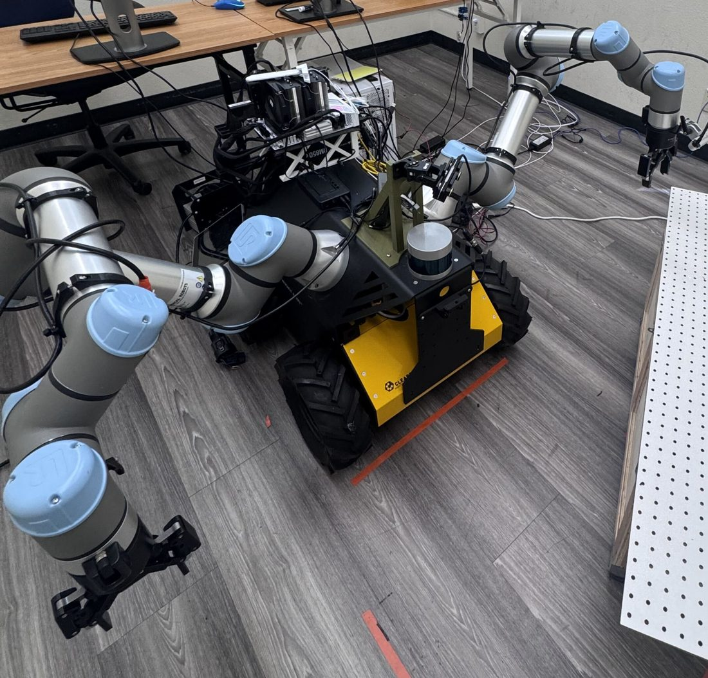
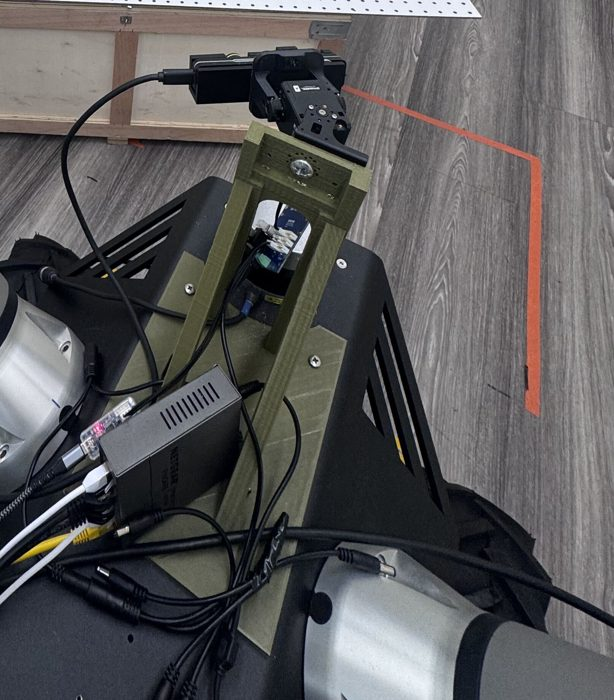

FLASH-CBF-RRT: Fast Lipschitz-Adaptive Safe Horizon CBF Steering for Certified Motion Planning
Under review, 2026 · project

Ph.D. Student · SDSU–UC San Diego
I am a Ph.D. student in the SDSU–UC San Diego Joint Doctoral Program, advised by Prof. Reza Akhavian and Prof. Nikolay Atanasov. I work on mobile and bimanual manipulation.
My long-term goal is robots that learn and adapt like modern learning systems while staying as reliable as classical robotics. Right now I'm exploring this from a few directions: world models and robot learning for manipulation, safe and efficient motion planning, and ways to give learned behavior performance guarantees that hold up as robots and tasks grow more complex.
Always happy to chat about robots and robotics. If you're around San Diego, feel free to reach out by email!
Ph.D., SDSU–UC San Diego, 2026–present
M.S. Intelligent Systems, Robotics & Control, UC San Diego, 2022–2026
B.S. Electrical & Computer Engineering (Control), minor in Computer Engineering, University of Tehran, 2017–2022
Under review, 2026 · project

arXiv, 2025 · arXiv

arXiv, 2025 · arXiv

IEEE CDC, 2023 · paper
+ 1 paper under review. * equal contribution.


I built and integrated our lab's mobile bimanual manipulator: a Clearpath Husky A200 with two UR5e arms and Robotiq 2F-85 grippers.
Interested in learning more about the platform? Feel free to reach out.
When I'm not working with robots, you'll usually find me at the gym, cooking something new, or reading a book on personal growth.